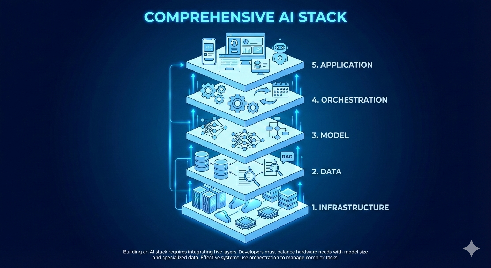

Having seen different evolutions in the AI/ML industry, one thing is clear: success does not come from building models alone. Real-world AI requires building complete AI systems.
ML Engineers must balance hardware needs, model size, specialized data like RAG, and orchestration logic — all while ensuring quality, speed, accuracy, safety, and compliance.
An AI Tech Stack is a structured, layered architecture that defines how AI systems are built, deployed, and operated in production. It integrates hardware, models, data, orchestration, and applications into one cohesive system.

AI models require specialized hardware like GPUs. Cloud enables elastic scaling — something impossible with traditional servers.
Model choice depends on size, specialization, and openness. Larger models offer reasoning power, while smaller models offer efficiency.
Models have knowledge cutoffs. Real-world AI systems rely on external data using retrieval systems (RAG).
Complex AI tasks require breaking problems into steps: planning, execution, review, and feedback.
This layer defines how users interact with AI systems. Interfaces, multimodal inputs, revisions, and integrations matter.
AI models, especially large language models, require specialized hardware such as GPUs or TPUs. Without the right infrastructure, models cannot scale, perform efficiently, or serve real-time users.
RAG (Retrieval-Augmented Generation) enhances models by supplying external, up-to-date data through retrieval systems, overcoming knowledge cutoffs.
Models cannot solve real problems alone. They require infrastructure, data pipelines, orchestration logic, and applications to function reliably in production environments.
Orchestration breaks complex user requests into manageable steps such as planning, tool execution, reasoning, and review, enabling higher quality AI outputs.
Cloud platforms provide elastic access to GPUs, scalable storage, high availability, and cost optimization that on-prem systems cannot easily offer.
Vector databases store embeddings of data, allowing fast semantic retrieval to provide relevant context to AI models during inference.
By enabling feedback loops such as self-review and correction, orchestration improves accuracy, reliability, and safety of AI responses.
Interfaces define how users interact with AI systems, allowing inputs, revisions, citations, and integrations with other tools.
Hardware choice, model size, orchestration complexity, data retrieval, and deployment strategy all directly impact AI cost and response time.
Real-world AI success depends on how infrastructure, models, data, orchestration, and applications work together as a unified system.
Building AI systems requires mastering the full AI tech stack. From infrastructure to applications, every decision impacts quality, speed, cost, and safety.